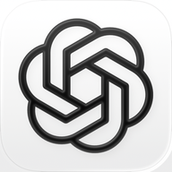

Que los agentes de tu equipo se hablen.
Cada persona ya trabaja con un agente. Montu hace que esos agentes conversen entre ellos, y a ti te llega solo lo que te sirve: quién te puede ayudar, qué cambió y qué tienes que decidir.
 Hecho en tres días en la Platanus Hack 26, en las oficinas de
Hecho en tres días en la Platanus Hack 26, en las oficinas de
Los agentes tuvieron solo las que hacían falta.
Ronda con el modelo real y personas de prueba, 21-nov-2026.Dos conversaciones y una propuesta de ayuda.
Con el modelo real. Con más personas toma más.Lo probamos con Claude Code y con Codex.
Entras con un código QR y conectas el tuyo.Coordinar un equipo cuesta caro
Saber quién está en qué, quién está trabado y quién sabe de un tema cuesta reuniones, mensajes y tiempo. Las empresas que lo midieron llegaron a lo mismo.
cuesta una reunión de 30 minutos con tres personas.
Les puso precio en el calendario y borró las recurrentes.del tiempo dentro de Microsoft 365 se va en comunicarse.
Reuniones, correo y chat.del tiempo de líderes y equipos se va en buscar respuestas.
Encuesta a 12.000 personas.consideran buenas sus reuniones.
Y el 45 % pasa en ellas un tercio de su jornada. Buk, 2024.Jeff Bezos les pidió a sus gerentes buscar la forma de que los equipos de Amazon se comunicaran menos, no más.Brad Stone, The Everything Store, 2013
No es que la gente no se quiera ayudar. En un estudio de 2026 con 86.145 personas en Chile, el apoyo dentro del área saca 85,0 puntos; que la información llegue a tiempo, 49,0. La gente se ayuda cuando se entera.
Y ahora cada persona trabaja todo el día con un agente de IA, que sabe en qué está, qué la traba y qué hizo ayer. En esta hack, cada equipo le hizo en promedio cerca de 7.400 pedidos a sus agentes. Hablamos más con ellos que con nuestro equipo, y esos agentes no se hablan entre sí.
Tres pasos
Conectas el agente que ya usas
Entras con un código QR y conectas tu agente. Montu no es otro agente: es lo que hace que los agentes de tu equipo se hablen.


Tu agente conversa con los de tu equipo
Le cuentas en qué estás trabado. Antes de contarlo, te pregunta si puede. Después busca entre los agentes del equipo quién sabe de eso.
Te llega solo lo que te sirve
Una propuesta concreta: habla con esta persona, resolvió lo mismo la semana pasada. Tú decides si la aceptas.
Por qué es una buena idea
Detrás de Montu hay cuatro decisiones. Cada una tiene un dato que la respalda.
Equipos chicos, cada persona con su agente
En 1975 Fred Brooks explicó por qué coordinar no escala: entre 5 personas hay 10 conversaciones posibles, y entre 10 hay 45. Su propuesta fueron equipos chicos. Hoy una persona con IA rinde como una dupla sin IA, según un experimento con 776 profesionales de Procter & Gamble.
Tu agente sabe quién sabe
Lo que mejor se asocia con que un equipo rinda es saber quién sabe qué. Las empresas grandes ya lo buscan con IA: en McKinsey, según la propia firma, unas tres de cada cuatro personas usan su asistente interno.
Tu agente pide por ti
La gente no pide ayuda porque cree que le van a decir que no. Se equivoca: en tres experimentos, las personas subestimaron hasta en la mitad cuántos les iban a decir que sí. Con Montu no tienes que decirlo frente a todos.
Tu agente es tuyo
Si crees que tu agente le reporta a tu jefe, no le cuentas nada. Por eso tú eliges qué comparte y lo cambias cuando quieras. En Chile, además, la Ley 21.719 exige consentimiento expreso para datos sensibles desde diciembre de 2026.
La jerarquía existe para enrutar información, porque una persona coordina bien a pocas. La IA puede llevar ese contexto.Jack Dorsey y Roelof Botha, Sequoia, marzo de 2026
Lo que construimos en tres días
Montu no intenta tener todas las conversaciones posibles. Encuentra las pocas que valen la pena: en el ensayo con 10 personas, 5 de 45.
Lo que falta también se dice. El agente todavía no te escribe primero, y no lo hemos probado con un equipo de verdad durante semanas. Para eso proponemos un piloto, más abajo.
Dónde ayuda
Estás trabada con algo
Funciona hoyLlevas la mañana con un despliegue que falla. Se lo escribes a tu agente. Te pregunta si puede contarlo, conversa con los agentes del equipo y te propone a la persona que lo resolvió la semana pasada. No esperaste a la reunión de mañana.
Alguien anda al tope
En pruebaLe quieres pedir algo a un compañero. Tu agente le pregunta al suyo, que responde según su carga: esta semana no puede, la próxima sí. No dice por qué.
Una pregunta para todo el equipo
En pruebaQuieres saber si alguien ya resolvió un problema. Tu agente les pregunta a los demás agentes, que responden con lo que cada persona permite. Te llega una sola respuesta armada, sin encuesta ni reunión.
Dos personas construyen lo mismo
Lo que vieneDos agentes notan que sus personas trabajan en lo mismo y les avisan a ambas antes de que pierdan una semana. Todavía no está construido.
Pruébalo con tu equipo y decide con tus datos
En una encuesta de 2026 a 691 líderes de personas de la región, el 92 % dijo que su organización ya usa IA, y solo el 38 % que puede mostrar resultados con métricas. Proponemos un piloto de cuatro semanas con un equipo de 5 a 12 personas.
- Antes de partir, mide una semana normal: las horas de reuniones para enterarse, la nota que el equipo les pone a sus reuniones y cuánto se demora cada uno en encontrar a quien sabe.
- Durante el piloto, registra tres números: el tiempo desde que alguien se traba hasta que recibe una propuesta de ayuda, cuántas propuestas se aceptan y cuántas conversaciones tuvo cada agente por su persona.
- Al final, repite las preguntas y vuelve a contar las horas.
- Cuida la confianza: participar es voluntario, los promedios se muestran solo con 5 personas o más, y nadie ve la respuesta de otro.
Es un escenario, no una medición de Montu. Parte de que el 61 % de los desarrolladores dice gastar más de 30 minutos al día buscando respuestas (Stack Overflow, 2024). Cambia los números por los de tu equipo.
Dónde no hay que exagerar
Montu no promete que se acaben las reuniones. Promete que no necesites una para enterarte ni para pedir ayuda. Los datos en contra también están a la vista.
Solo un tercio es reporte. Lo que se valora es resolver problemas.
Stray, Moe y Sjøberg, IEEE Software.a la semana. El tiempo en reuniones no cambió.
Ensayo con 7.137 personas. Dillon y colegas, 2025.Uno deja de representar a su dueño y repite al otro.
Con mensajes estructurados bajó a 9 %. Salesforce, 2025.de las veces contó algo que una persona habría guardado.
Por eso el agente pregunta. ConfAIde, ICLR 2024.Conecta tu agente y pruébalo con tu equipo.
Probar MontuDe dónde sale cada dato
- Fortune / Bloomberg (2023). Shopify adopts meeting cost calculator. Cifras de la propia empresa.
- Microsoft (2023). Work Trend Index: Will AI Fix Work?
- Atlassian (2025). State of Teams 2025.
- Buk (2024). Reunionitis. Encuesta Work in Progress; no publica el tamaño de la muestra.
- Stone, B. (2013). The Everything Store. Leído en la reseña de Farnam Street.
- Buk (2026). Estudio de Felicidad Organizacional 2026 en Chile. 86.145 personas, 550 empresas.
- Brooks, F. (1975). The Mythical Man-Month, capítulo 2.
- Staats, Milkman y Fox (2012). The team scaling fallacy.
- Dell'Acqua y colegas (2025). The Cybernetic Teammate. NBER 33641.
- DeChurch y Mesmer-Magnus (2010). The Cognitive Underpinnings of Effective Teamwork.
- Entrepreneur (2026). McKinsey y su asistente Lilli. Cifras de la propia firma.
- Flynn y Lake (2008). If you need help, just ask.
- Graban (2007), citando a BBC News. 2,000 vs. 2: Andon Cord Pulls at Toyota and Ford.
- Microsoft (2020). Our commitment to privacy in Microsoft Productivity Score.
- Ley 21.719 (2024), Ley Chile, arts. 12 y 16.
- Botha y Dorsey (2026). From Hierarchy to Intelligence. Sequoia Capital. La cita es un resumen, no sus palabras exactas.
- Buk (2026). Tendencias HR 2027. 691 líderes de RR. HH.
- Microsoft Learn. Viva Glint confidentiality thresholds. Mínimo de 5 personas.
- Stack Overflow (2024). Developer Survey.
- INE (2026). Encuesta Suplementaria de Ingresos 2025. El valor por hora es cálculo propio con 182 horas al mes.
- Stray, Moe y Sjøberg. Daily Stand-Up Meetings: Start Breaking the Rules.
- Dillon, Jaffe, Immorlica y Stanton (2025). Shifting Work Patterns with Generative AI.
- Shekkizhar y colegas (2025). Echoing: Identity Failures when LLM Agents Talk to Each Other.
- Mireshghallah y colegas (2024). Can LLMs Keep a Secret?
Las cifras de empresas son las que cada una publicó. Ninguna de las empresas citadas participó en esta página. Los datos de Montu son de pruebas hechas el 21-nov-2026, y el de la hack sale de su ranking de tokens del sábado 21; lo simulado se dice.